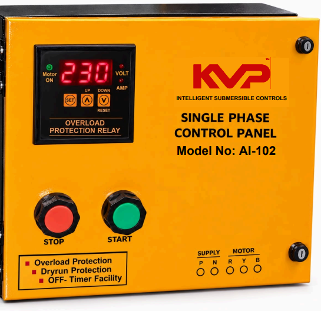

Single Phase Control Panel
A straightforward single-phase control panel delivering essential dry-run, overload and voltage protection for submersible pump installations in homes, farms and light commercial setups.
Overview
The AI-102 continuously monitors the incoming single-phase supply and automatically disconnects the motor the moment an unsafe condition is detected — protecting the pump winding from dry-running, overload and voltage swings that cause most premature motor failures in the field. Once the supply returns to a safe range, the panel restarts the motor on its own, keeping pump operation dependable with minimal supervision.
As a simplified sibling to the AI-101, the AI-102 focuses on the core protections needed for everyday pump safety in a compact single-phase enclosure — an economical, reliable option wherever a basic manual starter switch needs replacing.
Key Features
- Dry-Run Protection
- Overload Protection
- High / Low Voltage Protection
- OFF Timer Facility
Typical Applications
- Domestic borewell & overhead tank pumps
- Small agricultural submersible pump sets
- Shops & small commercial single-phase pump loads


Frequently Asked Questions (FAQ's)
English: Hold the green UP button for 3 seconds until the display shows 1, 2, 3, 4… Press UP to add minutes, or the red DOWN button to reduce minutes. Release at your desired minute — it auto-saves, no need to press SET. Note: the OFF Timer only works if the motor wires are connected.
తెలుగు: ఆకుపచ్చ UP బటన్ను 3 సెకన్లు నొక్కి పట్టుకోండి, డిస్ప్లేలో 1, 2, 3, 4… కనిపిస్తుంది. నిమిషాలు పెంచడానికి UP నొక్కండి, తగ్గించడానికి ఎరుపు DOWN నొక్కండి. మీకు కావలసిన నిమిషం వద్ద వదిలేయండి — ఇది ఆటోమేటిక్గా సేవ్ అవుతుంది, SET నొక్కాల్సిన అవసరం లేదు. గమనిక: మోటారు వైర్లు కనెక్ట్ అయి ఉంటేనే ఆఫ్ టైమర్ పనిచేస్తుంది.
English: Press and hold SET for 3 seconds to enter settings, select oL, then use UP/DOWN to adjust the amperage (A) to match your motor. Press SET again to save and confirm.
తెలుగు: సెట్టింగ్స్లోకి వెళ్లడానికి SET బటన్ను 3 సెకన్లు నొక్కి పట్టుకోండి, oL ఎంచుకోండి, తర్వాత మీ మోటారుకు సరిపోయేలా UP/DOWN తో ఆంపియర్ (A) విలువను సర్దండి. సేవ్ చేసి నిర్ధారించడానికి మళ్లీ SET నొక్కండి.
English: Press SET, select drY, then use UP/DOWN to set the amperage (A) at which the panel should detect dry-run/no-load. Press SET again to save and confirm. As a guide: set oL to your motor's running amps + 2A, and drY to running amps − 2A.
తెలుగు: SET నొక్కండి, drY ఎంచుకోండి, తర్వాత పంప్ డ్రై-రన్/నో-లోడ్ను గుర్తించాల్సిన ఆంపియర్ (A) విలువను UP/DOWN తో సెట్ చేయండి. సేవ్ చేసి నిర్ధారించడానికి మళ్లీ SET నొక్కండి. సూచన: oL విలువను మీ మోటారు రన్నింగ్ ఆంప్స్ + 2A గాను, drY విలువను రన్నింగ్ ఆంప్స్ − 2A గాను సెట్ చేయండి.
English: Check your motor's nameplate for its rated running current, then set oL to that running current + 2A, and drY to the running current − 2A. These are general starting points — fine-tune after observing the motor's actual running amps.
తెలుగు: మీ మోటారు నేమ్ప్లేట్పై ఉన్న రేటెడ్ రన్నింగ్ కరెంట్ను చూడండి, తర్వాత oL విలువను ఆ రన్నింగ్ కరెంట్ + 2A గాను, drY విలువను రన్నింగ్ కరెంట్ − 2A గాను సెట్ చేయండి. ఇవి సాధారణ ప్రారంభ విలువలు — మోటారు వాస్తవ రన్నింగ్ ఆంప్స్ను గమనించిన తర్వాత వీటిని సరిచేసుకోండి.
English: "oL" means the motor current has exceeded the set overload limit — check the pump/motor for jamming or overheating before resuming. "drY" means the panel detected no-load/dry-run conditions, usually because the water source has run out — check the source before restarting.
తెలుగు: "oL" అంటే మోటారు కరెంట్ సెట్ చేసిన ఓవర్లోడ్ పరిమితిని మించిపోయింది — మళ్లీ ఆన్ చేసే ముందు పంప్/మోటారులో జామింగ్ లేదా వేడెక్కడం లేదని చూసుకోండి. "drY" అంటే ప్యానెల్ నో-లోడ్/డ్రై-రన్ పరిస్థితిని గుర్తించింది, సాధారణంగా నీటి మూలం అయిపోవడం వలన — మళ్లీ ఆన్ చేసే ముందు నీటి మూలాన్ని తనిఖీ చేయండి.
Need full specs? Download the Corporate Pamphlet (PDF).